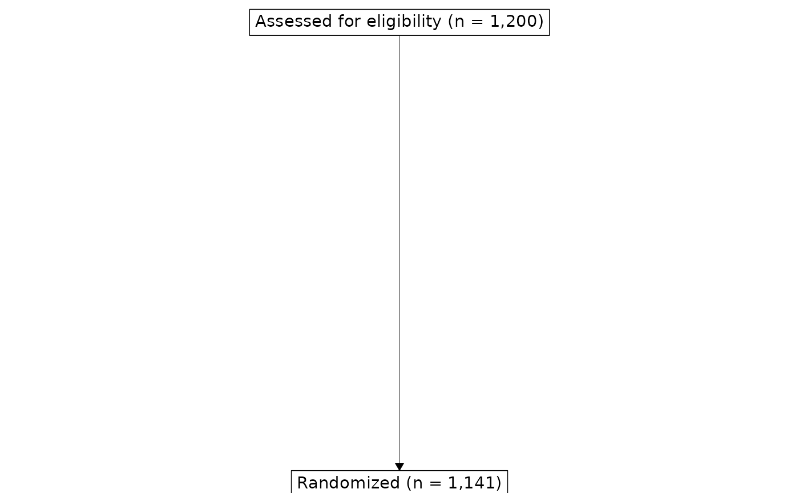

CONSORT diagram layers for ggplot2
Source:R/geom_consort.R, R/geom_consort_arrow.R, R/geom_consort_box.R, and 2 more
geom_consort.Rdgeom_consort() draws the boxes, arrows, and lines of a ggconsort object
created with consort_box_add(), consort_arrow_add(), and
consort_line_add(). It measures the rendered size of each box at draw
time, so boxes are centered on their (x, y) coordinates and arrows
start and end exactly at box edges, whatever the device size.
geom_consort_arrow() and geom_consort_box() are the legacy component
layers, which anchor arrows at box centers and shift box text by its
justification; they remain available for diagrams that depend on that
behavior. geom_consort_line() draws a standalone line segment with the
same styling as the diagram lines.
Usage
geom_consort(
label_color = "black",
label_size = 11,
label_height = 1,
family = "",
fill = "white",
box_color = "black",
linewidth = 0.25,
box_r = 0,
box_padding = 0.25,
arrow_length = 2,
row_gap = NULL,
equal_columns = FALSE
)
geom_consort_arrow(...)
geom_consort_box(label_color = "black", label_size = 11, label_height = 1, ...)
geom_consort_line(x, xend, y, yend, ...)Arguments
- label_color
Color of the box label text.
- label_size
Size of the box label text, in points.
- label_height
Line height of the box label text.
- family
Font family of the box label text. The default (
"") uses the device default.- fill
Fill color of the boxes. Individual boxes can override this with the
fillargument ofconsort_box_add().- box_color
Color of the box borders.
- linewidth
Width of the box borders; arrows and lines are drawn slightly lighter, in proportion.
- box_r
Corner radius of the boxes, in lines. The default
0draws square corners, as in the official CONSORT and PRISMA templates.- box_padding
Padding between a box's text and its border, in lines.
- arrow_length
Length of the arrow heads, in millimeters.
- row_gap
In a row/column layout, the vertical gap between rows, in lines. The default (
NULL) equalizes the gaps to fill the panel, capped at 2 lines so the diagram stays compact on large devices.- equal_columns
In a row/column layout, should all boxes in a column be drawn at the width of the column's widest box? The official CONSORT and PRISMA templates use uniform-width boxes.
- ...
For
geom_consort_box(), additional arguments passed toggtext::geom_richtext(). Ignored bygeom_consort_arrow().- x, xend, y, yend
Coordinates of the line segment drawn by
geom_consort_line().
Examples
cohorts <- trial_data |>
cohort_start("Assessed for eligibility") |>
cohort_define(
randomized = .full |> dplyr::filter(declined != 1),
excluded = dplyr::anti_join(.full, randomized, by = "id")
) |>
cohort_label(
randomized = "Randomized",
excluded = "Declined to participate"
)
consort <- cohorts |>
consort_box_add("full", row = 1, label = cohort_count_adorn(cohorts, .full)) |>
consort_box_add("excluded", row = 2, col = "side") |>
consort_box_add("randomized", row = 3) |>
consort_arrow_add(start = "full", end = "randomized") |>
consort_arrow_add(start = "full", end = "excluded")
library(ggplot2)
ggplot(consort) +
geom_consort() +
theme_consort()
